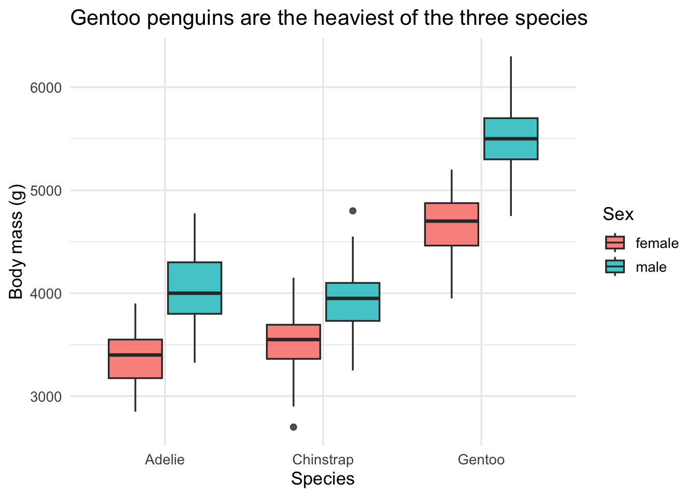

library(palmerpenguins)
library(dplyr)
library(ggplot2)
library(broom)
library(knitr)What predicts a penguin’s body mass?
An EDA and linear model of penguin body mass using the Palmer Penguins dataset, in R.
Data: Palmer Penguins, Palmer Station Antarctica LTER, released under a CC0 1.0 licence. Citation: Horst AM, Hill AP, Gorman KB (2020). palmerpenguins R package version 0.1.1. The data ships inside the palmerpenguins R package, so no download or network access is needed to reproduce this post.
Three species of penguin were measured on three islands in the Palmer Archipelago, Antarctica. I wanted to know: how much of a penguin’s body mass can be explained by its bill and flipper measurements, once species and sex are accounted for?
Cleaning the data
A handful of rows are missing measurements or sex entirely. Since the model below needs complete cases across all predictors, I drop them here rather than silently letting lm() do it, and report how much data that costs me.
penguins_clean <- penguins |>
filter(!is.na(sex)) |>
select(species, island, bill_length_mm, bill_depth_mm, flipper_length_mm,
body_mass_g, sex) |>
na.omit()
n_dropped <- nrow(penguins) - nrow(penguins_clean)
cat("Rows in raw data:", nrow(penguins), "\n")Rows in raw data: 344 cat("Rows after dropping incomplete cases:", nrow(penguins_clean), "\n")Rows after dropping incomplete cases: 333 cat("Rows dropped:", n_dropped, "\n")Rows dropped: 11 That drops 11 of the original 344 rows, leaving 333 penguins with complete measurements.
Body mass by species and sex
penguin_summary <- penguins_clean |>
group_by(species, sex) |>
summarise(
n = n(),
mean_mass_g = round(mean(body_mass_g), 1),
sd_mass_g = round(sd(body_mass_g), 1),
mean_flipper_mm = round(mean(flipper_length_mm), 1),
.groups = "drop"
)
kable(penguin_summary,
caption = "Body mass and flipper length by species and sex.")| species | sex | n | mean_mass_g | sd_mass_g | mean_flipper_mm |
|---|---|---|---|---|---|
| Adelie | female | 73 | 3368.8 | 269.4 | 187.8 |
| Adelie | male | 73 | 4043.5 | 346.8 | 192.4 |
| Chinstrap | female | 34 | 3527.2 | 285.3 | 191.7 |
| Chinstrap | male | 34 | 3939.0 | 362.1 | 199.9 |
| Gentoo | female | 58 | 4679.7 | 281.6 | 212.7 |
| Gentoo | male | 61 | 5484.8 | 313.2 | 221.5 |
Gentoo penguins are noticeably heavier than Adelie or Chinstrap, and within every species males run heavier than females. Flipper length tracks the same pattern, which suggests it might be a useful predictor of mass alongside bill measurements.
ggplot(penguins_clean, aes(x = species, y = body_mass_g, fill = sex)) +
geom_boxplot(alpha = 0.8) +
labs(
x = "Species",
y = "Body mass (g)",
fill = "Sex",
title = "Gentoo penguins are the heaviest of the three species"
) +
theme_minimal(base_size = 13)
Modelling body mass
I fit a linear model of body mass against bill length, flipper length, species, and sex. Species and sex are included because Figure 1 suggests both shift the whole distribution, not just the average.
mass_model <- lm(
body_mass_g ~ bill_length_mm + flipper_length_mm + species + sex,
data = penguins_clean
)
kable(tidy(mass_model, conf.int = TRUE),
digits = 2,
caption = "Coefficient estimates for the body mass model.")| term | estimate | std.error | statistic | p.value | conf.low | conf.high |
|---|---|---|---|---|---|---|
| (Intercept) | -759.06 | 541.38 | -1.40 | 0.16 | -1824.08 | 305.96 |
| bill_length_mm | 21.63 | 7.15 | 3.03 | 0.00 | 7.57 | 35.69 |
| flipper_length_mm | 17.85 | 2.90 | 6.15 | 0.00 | 12.14 | 23.55 |
| speciesChinstrap | -291.71 | 81.50 | -3.58 | 0.00 | -452.04 | -131.38 |
| speciesGentoo | 707.03 | 94.36 | 7.49 | 0.00 | 521.40 | 892.66 |
| sexmale | 465.40 | 43.08 | 10.80 | 0.00 | 380.64 | 550.15 |
glance_stats <- glance(mass_model)
kable(glance_stats[, c("r.squared", "adj.r.squared", "sigma", "df.residual")],
digits = 3,
caption = "Overall fit of the body mass model.")| r.squared | adj.r.squared | sigma | df.residual |
|---|---|---|---|
| 0.871 | 0.869 | 291.955 | 327 |
The model explains about 87.1% of the variance in body mass (adjusted R² = 0.869). Flipper length has the largest standardised effect of the continuous predictors, being Gentoo adds a large positive shift on top of that, and being male adds a further few hundred grams on average, holding the other measurements fixed. Bill length alone is a weaker predictor once flipper length and species are already in the model, which fits the biology: flipper length and species are closely tied to overall skeletal size, while bill length varies more independently of body mass within a species.
What I found
Body size in these penguins is driven mostly by species and flipper length, with sex adding a consistent but smaller shift. A simple linear model with four predictors already accounts for the large majority of the variation in body mass, which suggests there isn’t much left on the table for a more complex model to pick up without additional variables (diet, foraging range, or year, for instance) that aren’t in this dataset.